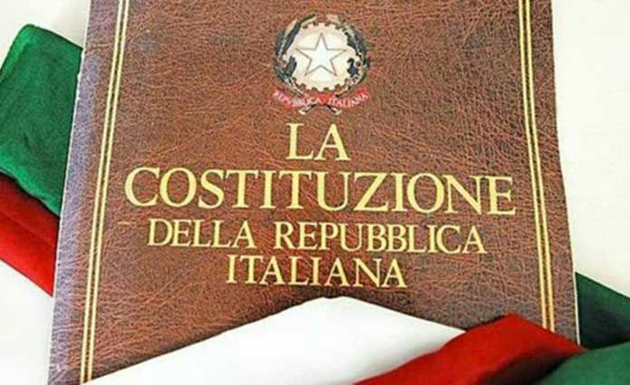
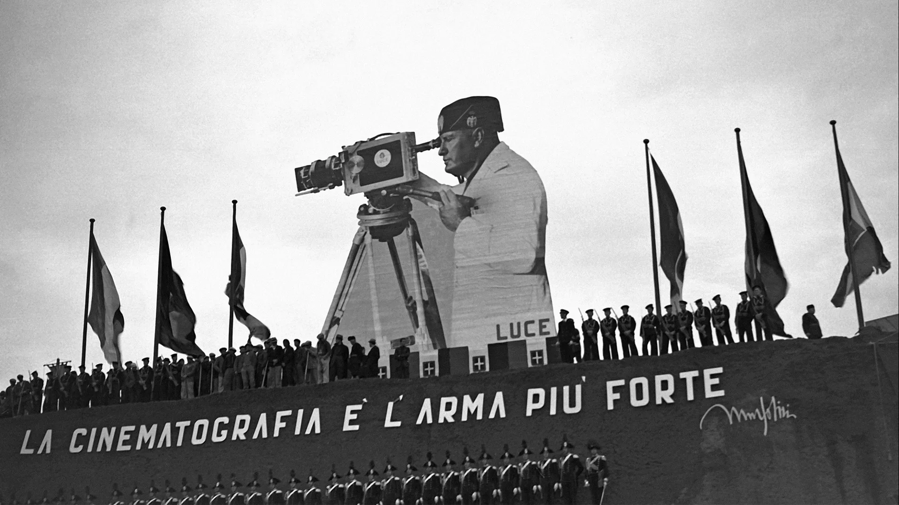

L'Evoluzione del Consenso: Dalla propaganda fascista alla tutela dei dati digitali
Analisi storica e giuridica della libertà di stampa e della cybersicurezza.
L'Articolo 21 e la fragilità della libertà
Siamo abituati a pensare alla libertà di stampa come a una conquista definitiva, scolpita nell'articolo 21 della nostra Costituzione. Eppure, la storia del Novecento ci insegna che l'informazione è un terreno di battaglia fragile. Se un tempo il potere passava attraverso il sequestro dei giornali e la propaganda, oggi le minacce alla nostra libertà hanno cambiato volto, nascondendosi tra le righe di un codice informatico o nei rischi di un data breach. Il filo rosso che unisce la censura fascista alla moderna cybersicurezza è lo stesso: il controllo del consenso attraverso il controllo dei dati e della percezione.


La manipolazione della realtà nello Stato totalitario
Come teorizzato da Walter Lippmann, poiché il mondo reale è troppo complesso per essere conosciuto direttamente, noi lo "vediamo" necessariamente attraverso il filtro dei media. Se questo filtro viene manipolato, i cittadini finiscono per vivere in una sorta di realtà virtuale creata da chi detiene il potere. Durante il regime fascista, questo filtro fu letteralmente sequestrato dalle "Leggi Fascistissime" del 1925.
Mussolini, ex giornalista, istituì le 'veline': ordini precisi su quali notizie pubblicare e quali ignorare, imponendo il divieto di cronaca nera e l'obbligo di esaltare la figura del Duce attraverso i cinegiornali dell'Istituto Luce. Anche la Chiesa Cattolica, come evidenziato dagli studi di Storia e Futuro, prestò una precoce attenzione al cinema con Papa Leone XIII, comprendendo che l'immagine poteva filtrare la realtà religiosa per mantenere salda la propria influenza.
I dati personali come pilastro democratico
Oggi il rischio si è spostato nel cyberspazio, dove un data breach non rappresenta solo un problema tecnico, ma una vera e propria ferita democratica. Se nel secolo scorso si decideva dall'alto cosa potessimo leggere, oggi il rischio è che gruppi di pressione possano influenzarci conoscendo a fondo i nostri gusti, orientamenti politici e debolezze personali.
L'aumento esponenziale degli attacchi informatici nel mondo contemporaneo finisce per colpire le infrastrutture stesse dell'informazione. Quando un sistema viene hackerato o manipolato, la verità si trova in pericolo tanto quanto lo era sotto la censura fascista. Senza un'adeguata sicurezza digitale, la libertà di espressione rischia di diventare un guscio vuoto, perché un cittadino i cui dati sono monitorati e orientati non è più realmente libero di scegliere.
Riflessione Critica: L'Evoluzione del Controllo
Il Passato: La centralizzazione della piazza
"Se una volta il dittatore parlava a tutti in piazza con un unico messaggio, l'obiettivo era unificare il pensiero attraverso una narrazione visibile, centrale e uguale per tutti. Il controllo si basava sulla censura esplicita e sulla propaganda di massa per creare un'opinione pubblica forzatamente unanime."
Il Presente: La frammentazione dello schermo
"Oggi il pericolo risiede nella profilazione psicologica e nel micro-targeting attraverso gli algoritmi. Ci vengono mostrate notizie create su misura per far leva sulle nostre debolezze e paure individuali. Se mille persone vedono mille realities diverse sui loro telefoni, l'opinione pubblica si frammenta, facendo mancare un terreno comune di verità."
In definitiva, la libertà oggi non si difende solo leggendo i giornali, ma proteggendo la nostra privacy: se perdiamo il controllo dei nostri dati, perdiamo la capacità democratica di decidere chi vogliamo essere.